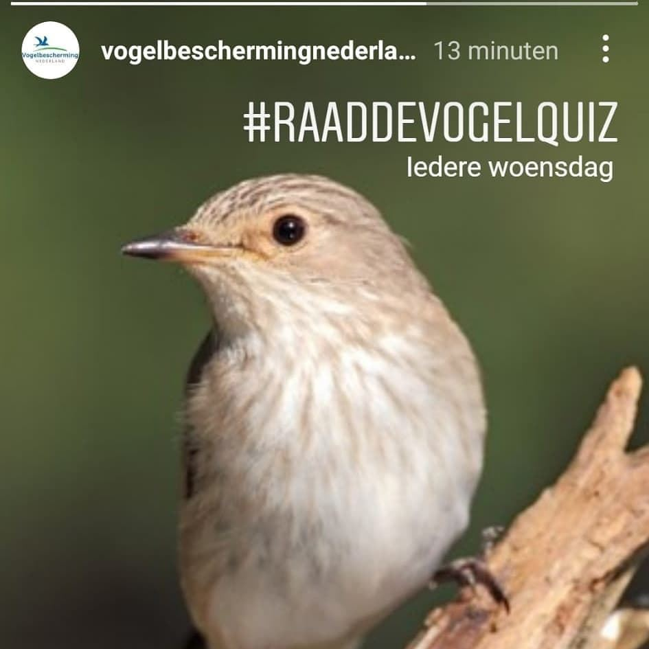
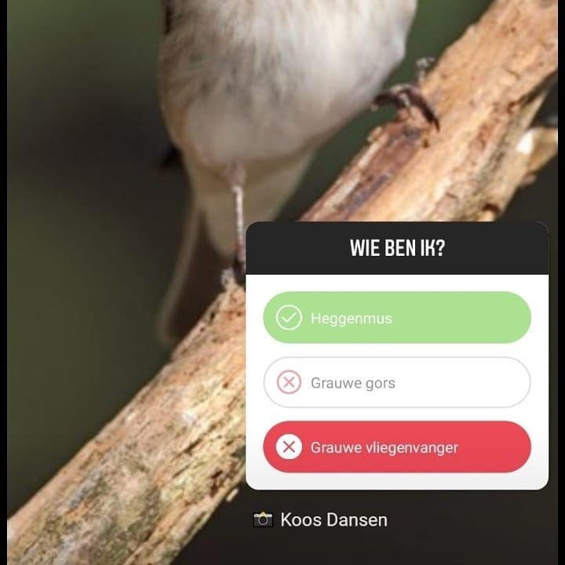

Grauwe vliegenvanger in de vogelquiz
28 juli 2021 · Vogelbescherming Nederland
- Het ging over
- Grauwe vliegenvanger


@vogelbeschermingnederland Zelfs de beste maken fouten. Maar dit is toch duidelijk een Grauwe vliegenvanger.
Ingestuurd: @jonne_vee